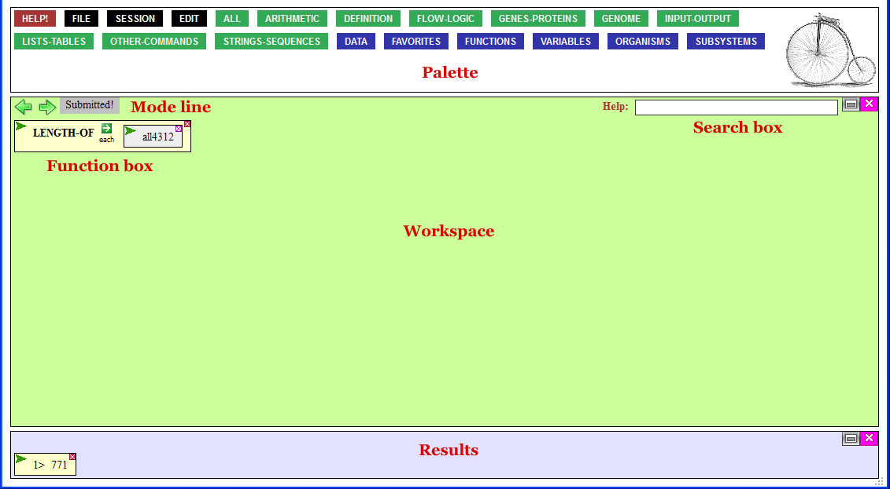

Welcome to the VPL tutorial!
Learn about the
palette
-- including how to bring down functions and data.
Learn about
function and data boxes
and how to manipulate them.
Learn about the
workspace
and how to build code.
Learn about the
results area
.
See an interactive
example
.
Learn about
Drag n Drop.
Learn what to do
when things go wrong
.
Learn about defining
your own variables and functions
.
Learn about saving and restoring
user sessions
, so you can save your work and continue it later.
Learn how to
share code
with other users.
NEW --
Using the Sequence Viewer (pdf)
.

If this tutorial does not answer your question, or you think this tutorial should cover something that it doesn't, please email me at mdslup@gmail.com. I promise a speedy reply.